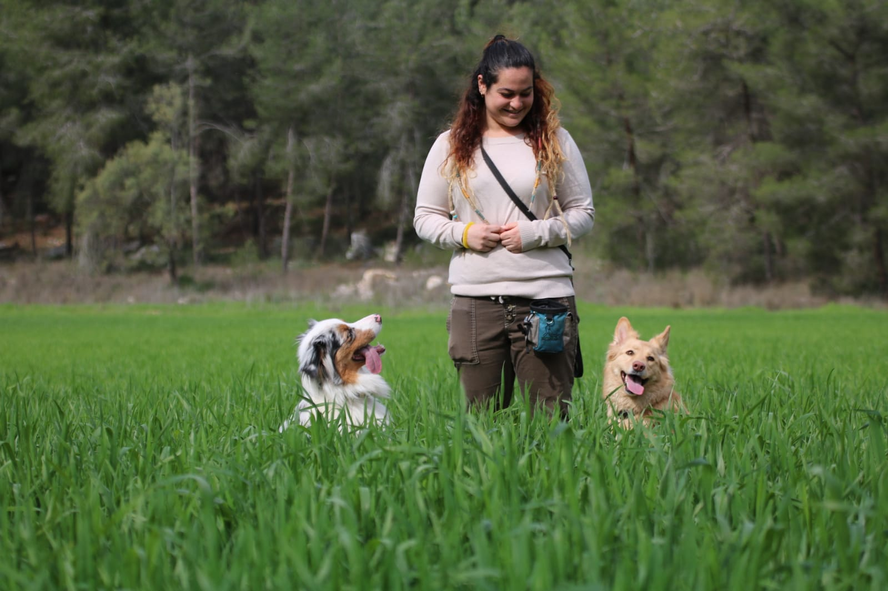
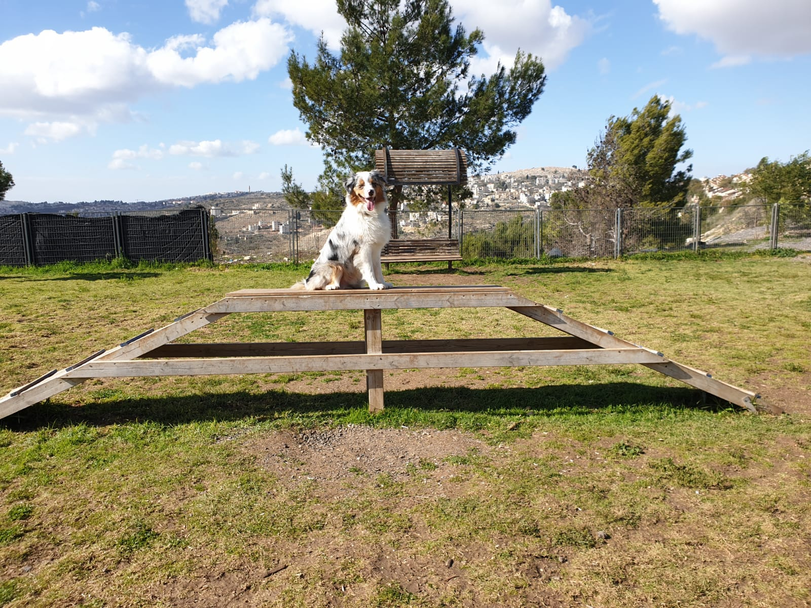
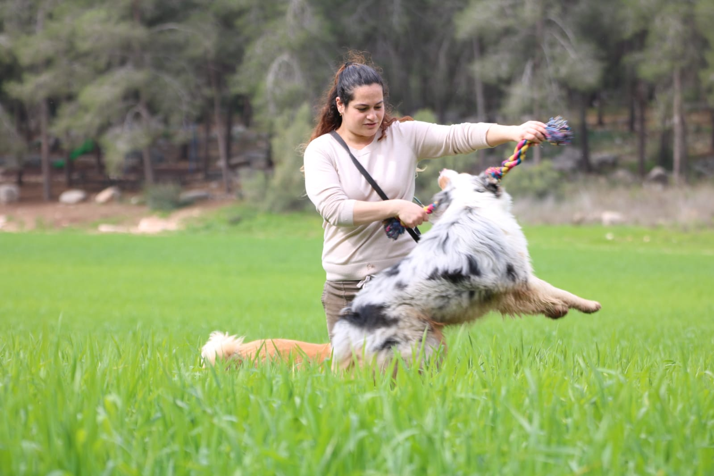

קוראים לי גל מזרחי, אני בת 23 וגרה בגבעת זאב. סיימתי בהצלחה יתרה קורס אילוף כלבים במרכז אופק, ולאחר מכן המשכתי
לקורס כלבנות טיפולית, אותו גם סיימתי בהצלחה. יש לי 2 כלבים מדהימים, מייפל (נקבה, בת שנתיים) ומאנץ' (זכר, בן
שנה), כאשר מייפל היא כלבת בית, ומאנץ' הוא כלב טיפולי מוכשר. יש לי ניסיון בטיפול במגוון אוכלוסיות, בזכות היכולות
של מאנץ' להתאים את עצמו לכל מטופל.
אצלי מקבלים פתרון לכל קושי או צורך המופיע עם הצטרפות של כלב לחיים, החל באילוף וחינוך גורים, דרך אילוף כלבים
בסיסי ופתרון בעיות התנהגות ועד אילוף לשמירה והגנה. מהניסיון שלי, אין דבר כזה כלב לא טוב, יש כלב לא מחונך- ואני
מתחייבת להקנות לכלב שלך שפה והרגלים שיהפכו את
האינטראקציה בינך לבינו לקלה, נעימה והרמונית יותר.
בין אם זה אילוף או כלבנות טיפולית אני מביאה איתי:
- ידע זה כוח – ניסיון בעבודה עם כל סוגי הגזעים והגילאים, שיטות טיפול המתקדמות בתחום.
- תפור למידותיך – אני מתאימה את שיטת האילוף או הטיפול ספציפית עבורכם ובונה לכם את המסלול
היעיל והאפקטיבי ביותר.
- אין סימני שאלה – תוך מפגש אחד אדע לאבחן אם נדרש אילוף כלבים בסיסי או מדובר בטיפול
התנהגותי לכלבים.
- יש לך את זה – אתן לך ולכל בני ביתך כלים פשוטים וקלים ליישום ונוודא שהם עובדים בשטח.